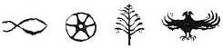

Erim kitaba sıkıca sarılıp hıçkıra hıçkıra ağlamaya başladı. İkizler, Nisan, Zafer, Müzeyyen Babaanne zaten sessizce ağlıyorlardı; onlar da kendilerini bıraktılar. Tahta kurdu Abdülmuttalip Efendi’nin, hamamböceği İsmet Abi’nin, Cimbo’nun, karınca Haydar’ın, puhu kuşunun, hatta bizim sakanın bile ağladığından emin olabilirsiniz.
